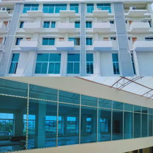

থাই গ্লাস ও অ্যালুমিনিয়ামের দাম কত? জানুন ২০২৬ সালের আপডেট রেট (Thai Glass Price in BD)
সূচিপত্র (এক নজরে)
নতুন বাড়ি বা অফিসের জন্য থাই গ্লাস ও অ্যালুমিনিয়াম লাগানোর আগে সঠিক দাম জানা খুবই জরুরি। City Mistri আপনাদের জন্য নিয়ে এসেছে ২০২৬ সালের লেটেস্ট প্রাইস লিস্ট।
অ্যালুমিনিয়াম সেকশনের দাম (Aluminum Profile Price List)
বাংলাদেশে বর্তমানে কাই (Kai), চুং হুয়া এবং বিটিএ অ্যালুমিনিয়াম সবচেয়ে জনপ্রিয়। ব্র্যান্ডভেদে দামের তালিকা নিচে দেওয়া হলো:
| ব্র্যান্ডের নাম | কালার | দাম (প্রতি কেজি) |
|---|---|---|
| KAI (কাই) | সিলভার (Silver) | ৪২০ - ৪৪০ টাকা |
| KAI (কাই) | শ্যাম্পেইন (Champagne) | ৪৫০ - ৪৮০ টাকা |
| Chung Hua (চুং হুয়া) | সিলভার | ৩৮০ - ৪০০ টাকা |
| Chung Hua | শ্যাম্পেইন | ৪১০ - ৪৩০ টাকা |
গ্লাসের দাম (Glass Price Per Sqft)
আপনার জানালার জন্য ৫মিমি নাকি ৬মিমি গ্লাস দরকার? বিস্তারিত দেখুন:
| গ্লাসের ধরন | পুরুত্ব | দাম (প্রতি স্কয়ার ফিট) |
|---|---|---|
| ক্লিয়ার গ্লাস | ৫ মিমি | ৬৫ - ৭৫ টাকা |
| ক্লিয়ার গ্লাস | ৬ মিমি | ৮৫ - ৯৫ টাকা |
| মারকারি গ্লাস | ৫ মিমি | ৮০ - ৯০ টাকা |
| টেম্পার্ড গ্লাস | ১০ মিমি | ৩৫০ - ৪৫০ টাকা |
নোট: আপনার পুরনো জানালা বা দরজা কি নষ্ট হয়ে গেছে? আমাদের থাই গ্লাস রিপেয়ার সার্ভিস পেজটি ভিজিট করুন অথবা সরাসরি কল করুন।
থাই জানালার পূর্ণাঙ্গ খরচ কীভাবে হিসাব করবেন?
শুধু গ্লাস কিনলেই হবে না, এর সাথে চাকা, লক এবং রাবার বা সিলিকন লাগে। এছাড়া আপনি যদি অফিস গ্লাস পার্টিশন করতে চান, তবে তার হিসাব আলাদা হবে।
আমাদের কাজের ধাপসমূহ
ধাপ ১: আমাদের প্রতিনিধি সাইট ভিজিট করে মাপ নিবেন।
ধাপ ২: আমরা বিস্তারিত কোটেশন বা বাজেট দিব।
ধাপ ৩: ম্যাটেরিয়াল কনফার্ম করে কাজ শুরু হবে।
সচরাচর জিজ্ঞাসিত প্রশ্ন (FAQ)
১. থাই জানালায় ৫মিমি নাকি ৬মিমি গ্লাস ভালো?
সাধারণ বাসা-বাড়ির জন্য ৫মিমি গ্লাসই যথেষ্ট এবং স্ট্যান্ডার্ড। তবে জানালার সাইজ যদি অনেক বড় হয় (যেমন ৭ ফিট হাইট), তবে ৬মিমি ব্যবহার করা নিরাপদ।
২. কাই (Kai) নাকি চুং হুয়া—কোনটি ভালো?
নিঃসন্দেহে কাই (Kai) অ্যালুমিনিয়াম বাংলাদেশের সেরা ব্র্যান্ড, এর ফিনিশিং এবং টেকসই ক্ষমতা বেশি। তবে বাজেট কম থাকলে চুং হুয়াও (Chung Hua) একটি ভালো অপশন।
৩. আপনারা কি ঢাকার বাইরে কাজ করেন?
হ্যাঁ, আমরা সারা বাংলাদেশে কাজ করি। চট্টগ্রাম, সিলেট, রাজশাহীসহ সব জেলায় আমাদের সার্ভিস এভেইলেবল।
৪. এক স্কয়ার ফিট থাই গ্লাসের খরচ কত পড়ে?
এটি নির্ভর করে অ্যালুমিনিয়ামের সেকশনের ওপর। গড়ে সব খরচ মিলিয়ে (ম্যাটেরিয়াল + মিস্ত্রি) প্রতি স্কয়ার ফিট ৪৫০ টাকা থেকে ৬৫০ টাকা পর্যন্ত পড়তে পারে।